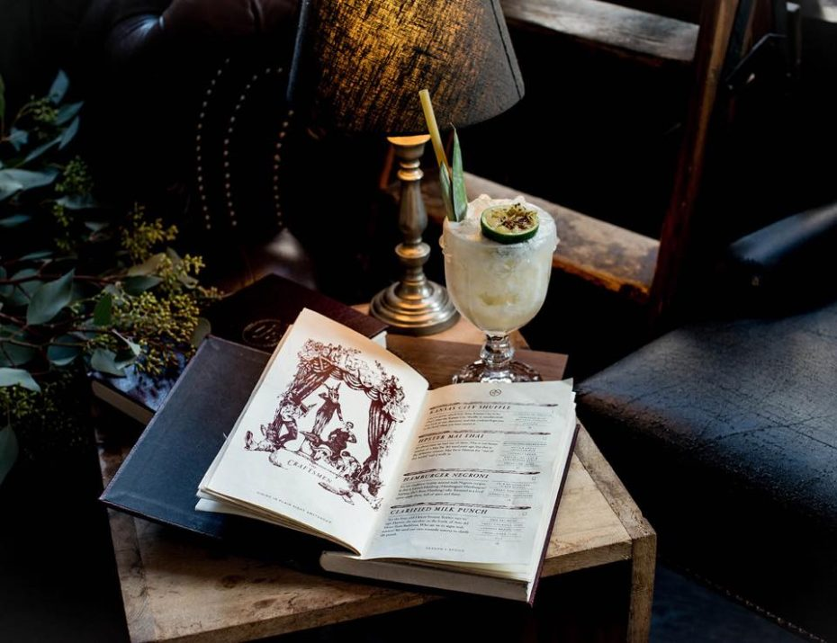

10x Leuke plekken voor een drankje in Den Haag

Vroeger werden bars verborgen achter omdat het drinken van alcohol bijna overal verboden was. Vandaag de dag is dat natuurlijk niet het geval, maar vinden we het wel leuk om verborgen plekjes te ontdekken (en een drankje te drinken). Wanna talk easy? Hier moet je zijn.
Check hieronder 10 x leuke plekken voor drankje in Den haag
The Wine Cellar
Sla de ‘normale’ wijnbars eens over en ga naar de 15e-eeuwse “Nieuwe Kerk” bij de Dam in Amsterdam. In de catacomben van de kerk vind je deze bar, waar je kunt genieten van een proeverij met een deskundige sommelier. Geniet van New World-wijnen in het hart van de stad, en als je iets vindt waar je van houdt, neem je gewoon een flesje mee naar huis. Google Maps: Nieuwezijdsvoorburgwal 137, Amsterdam
Wynand Fockink
Deze bar is goed verstopt in een van de zijstraten bij de Dam. In 1679 creëerde Wynand Fockink een distilleerderij voor drank. Al snel kwam daar een proeverij-ruimte bij zodat zijn klanten de producten konden proeven. In deze bar drink je vandaag de dag nog steeds de beste likeuren en jenevers die zijn gemaakt volgens de 17e-stijl crafting-methoden. Google Maps: Pijlsteeg 31, Amsterdam
The Wine Cellar
Sla de ‘normale’ wijnbars eens over en ga naar de 15e-eeuwse “Nieuwe Kerk” bij de Dam in Amsterdam. In de catacomben van de kerk vind je deze bar, waar je kunt genieten van een proeverij met een deskundige sommelier. Geniet van New World-wijnen in het hart van de stad, en als je iets vindt waar je van houdt, neem je gewoon een flesje mee naar huis. Google Maps: Nieuwezijdsvoorburgwal 137, Amsterdam
Wynand Fockink
Deze bar is goed verstopt in een van de zijstraten bij de Dam. In 1679 creëerde Wynand Fockink een distilleerderij voor drank. Al snel kwam daar een proeverij-ruimte bij zodat zijn klanten de producten konden proeven. In deze bar drink je vandaag de dag nog steeds de beste likeuren en jenevers die zijn gemaakt volgens de 17e-stijl crafting-methoden. Google Maps: Pijlsteeg 31, Amsterdam
World Class Room
Deze bar bevind zich boven het restaurant Pigs & Punch. Na je reservering door te geven zal je door iemand naar een koelkastdeur te worden begeleid. Hierachter bevindt zich de geheime cocktailbar waar je door first class bartenders bediend zal worden. Google Maps: Utrechtsestraat 30A, Amsterdam Google Maps: Nieuwezijdsvoorburgwal 137, Amsterdam
Wynand Fockink
Deze bar is goed verstopt in een van de zijstraten bij de Dam. In 1679 creëerde Wynand Fockink een distilleerderij voor drank. Al snel kwam daar een proeverij-ruimte bij zodat zijn klanten de producten konden proeven. In deze bar drink je vandaag de dag nog steeds de beste likeuren en jenevers die zijn gemaakt volgens de 17e-stijl crafting-methoden. Google Maps: Pijlsteeg 31, Amsterdam
Hiding in Plain Sight
Hiding in Plain Sight (HPS) straalt de jaren ’20 uit en in combinatie met de opvallende figuren achter bar en old fashioned cocktails is dit de ultieme plek om de speakeasy sfeer te proeven. De bar ligt verscholen vlakbij de Nieuwmarkt, vandaar de naam hiding in plain sight (verstoppen in het zicht). Google Maps: Nieuwezijdsvoorburgwal 137, Amsterdam
Bron: HPS
Wynand Fockink
Deze bar is goed verstopt in een van de zijstraten bij de Dam. In 1679 creëerde Wynand Fockink een distilleerderij voor drank. Al snel kwam daar een proeverij-ruimte bij zodat zijn klanten de producten konden proeven. In deze bar drink je vandaag de dag nog steeds de beste likeuren en jenevers die zijn gemaakt volgens de 17e-stijl crafting-methoden. Google Maps: Pijlsteeg 31, Amsterdam